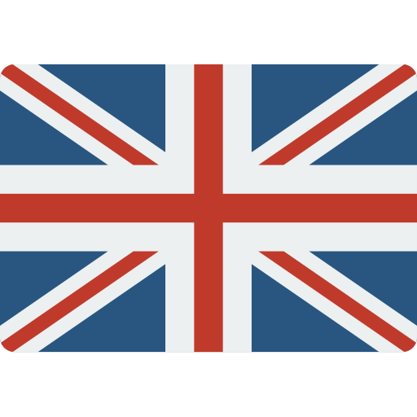
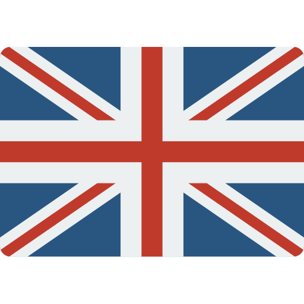

Hi,
I'm Kevin
Software Engineer
Curriculum Vitae
About
"A good foundation and a solid architecture
is the heart of every project"
With this as my vision, translating a problem into a practical solution with a realistic approach becomes my motto. I enjoy problem solving and thinking outside of the box. Through my career I have had the opportunity to work on a wide variety of different projects. This enabled me to develop a broad set of skills which allows me to quickly adapt to different IT environments. I believe that a programming language should not be a limiting factor. So through my career I have become proficient at picking the right tool for the job and utilize it to the best of my ability.
Work
Commercial
Projects
Testimonial
Education
Hogeschool Utrecht
BSc, Software Development, 9
HAN University of Applied Science
Minor, Embedded Vision Design, 8
Contact
Did I pique your interest and you're interested in working together, or maybe you simply want to have a chat?
Got an idea for an application and you require some technical insights? I will help you turn your idea into a reality!
So do not hesitate to contact me and fill out the form below!
 

Software Developer at Livestock Robotics
C++ • ARCHITECTURE • BACKEND DEVELOPMENT
At Livestock Robotics I did my graduation internship. Here I was responsible for designing and developing an architecture for the implementation of the pathplanning algorithm NURAC that would integrate with ROS. The algorithm is used to find the most optimal path for egg collection in a poultryhouse. The software was capable of heuristicly improving its performance by using external input data, such as the collection of eggs. After my graduation I continued working here for a couple of months to polish the end-product where I have used Qt-Toolkit to build the visualization of the algorithms performance.
Period: Februari 2019 - December 2019
AI and Computer Vision Engineer at Track32
PYTHON • DATA SCIENCE • BACKEND DEVELOPMENT
At Track32 I have worked on several different projects in collaboration with other companies. One of these projects was a collaboration with Corvus Drones on agriculture and greenhouse cultivation. Here I built an optical detection system for plant trays based on visual markers using OpenCV as the main component. Another project was a collaboration with NIOO-KNAW on their research on Oystercatchers. Here I have built a toolkit where their structured data, such as phenotypical data and unstructured data such as images are combined to logical objects. These objects can then easily be processed for more data. Subsequently with libraries such as PyTorch we were able to gain some valuable insights. For most of these projects deep learning and computer vision were essential elements.
Period: Februari 2020 - November 2020
Software Developer at Corvus Drones
NODE.JS • UI DESIGN • FULL-STACK DEVELOPMENT
At Corvus Drones I got my first internship. I was responsible for designing the architecture between the low level software of the drone and the frontend for the end user. For the front-end I have used technologies such as PugJS and JQuery. Here the users can control and monitor greenhouse drones. Within a few clicks the user is able to create flightplans for the drone making it capable for fully autonomous flight. The back-end API was written in Javascript using Express, which handled the communication between the drones and the main server.
Period: Februari 2018 - July 2018
Manager and Strategist at SentenceGaming
MARKETING • ADVISING • CONTENT MANAGER
At SentenceGaming I mainly play an advisory role. I am responsible for conceiving ideas and projects to help expand the brand. For each one of these projects I research the viability and prioritize tasks to concoct a feasible plan of approach. Besides these activities I also manage the main website and develop and maintain the technical products.
Period: July 2019 - Present